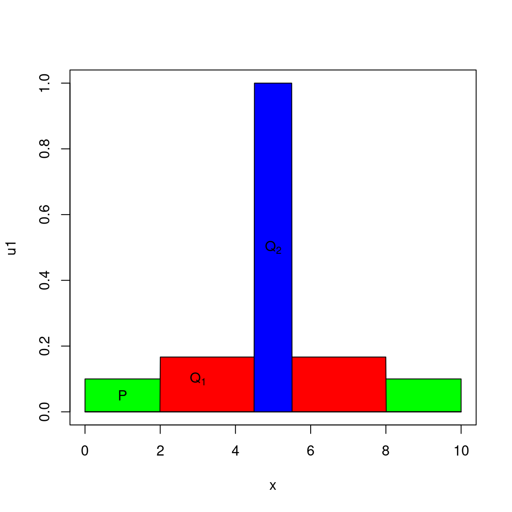

In this chapter, we consider methods for pricing derivatives under a historical density for the underlying asset.
In order to motivate this approach, consider Figure 27.1 which represents the distribution of price for the “SoCal basis”. This is the difference between the price of natural gas at Henry Hub (the delivery point in Southern Louisiana for the NYMEX Futures contract), and the price in Southern California. In general, the price difference reflects the cost of transporting gas from East to West, say less than a douzen cents per unit of volume. Once in a while, however, a disruption in supply causes the price differential to jump to $3 or $5. In that context, what is the price of a call option struck at $2?
Figure 27.1: Distribution of Natural Gas price difference between Southern California and Henry Hub in Louisiana (in $ per mmbtu).
It is tempting to use make use of historical data, given the very specific nature of the distribution. The question then becomes: Can we transform an empirical density into a density that:
There is a abundant literature on the subject of derivative pricing under empirical densities. See, for example, the review article of Jackwerth (Jackwerthwinter1999?), as well as the paper by Derman and Zou (Zou 1999Zou. 1999. “Strike-Adjusted Spread: A New Metric for Estimating the value of Equity Options.” Quantitative Strategies Research Note, Goldman Sachs.). The principle of Derman’s approach is to start with an empirical density for the underlying asset, and to adjust this density in order to make it risk-neutral. Under the risk-neutral density, the expected value of the settlement of a futures contract must be the current forward price, and the fair value of a derivative is the discounted expected value of the payoff.
How do we transform an empirical density into a risk-neutral one? The intuition is to adjust the empirical density in a way that “disturbs” it as little as possible. The concept of entropy is useful to quantify the notion of closeness between distribution.
The entropy of a random variable \(X\) is defined as
\[H(X) = -\sum_i p(x_i) \ln(p(x_i))\]
Therefore, the entropy of a uniform discrete variable with probability \(1/N\) associated with each value \(x_i, i=1, \ldots, N\) is \(\ln(N)\).
Let \(P\) and \(Q\) be two discreet random variables. The relative entropy of \(P\) and \(Q\) measures the closeness between the probability distributions over the same set:
\[\begin{align} S(P,Q) & = E_Q\left\{\log Q - \log P\right\} \nonumber \\ & = \sum_x Q(x) \log \left(\frac{Q(x)}{P(x)}\right) \end{align}\]

Consider for example the distribution \(P\), a uniform distribution over the set \(X_N = (x_i, i=1, \ldots, N)\) and the distribution \(Q\), also uniform over a subset \(X_M \in X_N\) of size \(M\):
\[q(x_i) = \left\{ \begin{array}{rl} \frac{1}{M} & \mbox{if $x_i \in X_M$} \\ 0 & \mbox{otherwise} \end{array} \right.\]
The distributions are represented in figure ??. Then
\[S(Q,P) = \ln(N) - \ln(M)\]
Now write \(M = N^\alpha\), the relative entropy can be expressed by:
\[S(Q,P) = \ln(N)(1 - \alpha)\]
The relative entropy is inversely proportional (in a log scale) to the number of elements that are common to \(X_M\) and \(X_N\).
A natural procedure is to compute \(Q\) so as to minimize the relative entropy \(S(P,Q)\) under the constraint that \(Q\) is risk-neutral. We expand upon this idea by computing \(Q\) so that \(Q\) satisfies an arbitrary number of additional constraints. Specifically, such that \(Q\) prices exactly a number of benchmark derivatives. Next section describes a method for performing this calculation.
This formulation is derived from Derman and Zou and we expand on their approach in order to calibrate the density \(Q\) on prices as well as on implied volatility.
Consider a density \(P\) evaluated over \(n\) intervals, so that:
\[p_i = P(x_i \leq X \leq x_{i+1})\]
We look for the discrete density \(Q\) defined over the sample sampling, which solves the following minimization problem:
\[\begin{array}{ll} \mbox{max} & -\sum_{i=1}^n p_i \log \frac{p_i}{q_i} \\ \mbox{such that} \nonumber \\ & \sum_{i=1}^n p_i = 1 \nonumber \\ & \sum_{i=1}^n p_i A_j(x_i) = b_j, j=i, \ldots, m \nonumber \end{array}\]
Constraints of a second type may be used to calibrate the risk-neutral density to match a variety of market information.
To match a given at-the-money volatility (\(\sigma\)), set:
\[\begin{align} A_j(x) & = x^2 \nonumber \\ b_j & = \sigma^2 + \bar{x}^2\end{align}\]
To match the price \(s\) of a straddle, set:
\[\begin{align} A_j(x) &= \mid x-K \mid \nonumber \\ b_j &= s e^{r(T-t)}\end{align}\]
This formulation may be applied to an arbitrary set of options.
The Lagrangian function is
\[L = - \sum_i p_i \log \frac{p_i}{q_i} + \sum_j \lambda_j (y_j - \sum_i p_i A_j(x_i)) + \mu (1-\sum_i p_i)\]
The first-order conditions are:
\[\begin{align} \frac{\partial L}{\partial p_i} &= -\ln(\frac{p_i}{q_i}) - 1 -\sum_j \lambda_j A_j(x_i) -\mu = 0 \tag{27.1} \\ \frac{\partial L}{\partial \lambda_j} &= y_j - \sum_i p_i A_j(x_i) = 0 \tag{27.2} \\ \frac{\partial L}{\partial \mu} &= 1-\sum_i p_i = 0 \tag{27.3} \end{align}\]
Using ??, we obtain,
\[p_i = q_i e^{(-1-\sum_j \lambda_j A_j(x_i) -\mu)}\]
Divide by \(\sum_i p_i\) to eliminate \(\mu\) and a constant term:
\[\begin{align} p_i &=& \frac{q_i e^{(-\sum_j \lambda_j A_j(x_i) -\mu)}}{\sum_k q_k e^{(-1-\sum_j \lambda_j A_j(x_k) -\mu)}} \\ &=& \frac{q_i e^{(-\sum_j \lambda_j A_j(x_i))}}{\sum_k q_k e^{(-1-\sum_j \lambda_j A_j(x_k))}}\end{align}\]
To calculate \(\lambda_j\), we use \[eqn:foc-2\]:
\[y_j = \sum_i p_i A_j(x_i)\]
and substitute the expression for \(p_i\):
\[y_j = \frac{\sum_i q_i e^{(-1-\sum_j \lambda_j A_j(x_i))} A_j(x_i)}{\sum_i q_i e^{(-1-\sum_j \lambda_j A_j(x_i))}}\]
To summarize, the values for the adjusted probabilities \(p_i\) are found to be:
\[p_i = \frac{e^{-\sum_j \lambda_j A_j(x_k)}}{\sum_k e^{-\sum_j \lambda_j A_j(x_k)}}\]
with \(\lambda_j\) solving the system:
\[y_j = \frac{\sum_i q_i e^{-\sum_j \lambda_j A_j(x_i)} A_j(x_i)}{\sum_i q_i e^{-\sum_j \lambda_j A_j(x_i)}}, j=1, \ldots, m\]
The density can be further calibrated to available market information. Figure ?? shows the result of the minimum entropy adjustment to the sample distribution to match both the forward price and the value of at-the-money straddles.
The idea here is to use actual historical paths in a Monte-Carlo simulation. In this section, we summarize the model developed by Potters, Bouchaud and Sestovic (Marc2001?).
Let’s first introduce some notation:
Define the local risk \(R_k\) as:
\[E^P\left[(C_{k+1}(x_{k+1}) - C_k(x_k) - \phi_k[x_{k+1} - x_k])^2\right]\]
where \(E^P[]\) is the expectation under the objective probability measure.
We look for the pricing function \(C_k(x)\) that minimizes the residual hedging risk.
The functions \(C(x)\) and \(\phi(x)\) are decomposed over an appropriate set of basis functions:
\[\begin{align} C_k(x) &=& \sum_{a=1}^M \gamma_a^k C_a(x) \\ \phi_k(x) &=& \sum_{a=1}^M \gamma_a^k \frac{\partial C_a(x)}{\partial x}\end{align}\]
Splines provide a convenient set of basis functions. Given a set of knots \(t_i, i = 1 \ldots, k\), the spline function for polynomials of degree \(n\) is defined by:
\[C(x) = \sum_{j=0}^n b_{0,j}x^j + \sum_{i=1}^k \sum_{j=0}^n b_{i,j}(x-t_i)_+^j\]
Thus, a spline of degree \(n\) with \(k\) knots is a linear combination of \((k+1)(n+1)\) basis functions. The derivative of \(C(x)\) with respect to \(x\) is readily computed. To simplify notation, let:
\[\begin{align} C(x) &=& \sum_{a=1}^m \beta_a F_a(x) \nonumber \\ C'(x) &=& \sum_{a=1}^m \beta_a F'_a(x) \nonumber\end{align}\]
where \(F_a(x)\) defined as above. At each step \(t\) in the hedged Monte-Carlo simulation, we obtain the price function by solving for \(\beta\) the following optimization problem (formulation for a call):
\[\begin{align} \mbox{min} & \sum_{l=1}^N [e^{-\rho} C_{t+1}(x^l_{t+1}) - \\ & \sum_{a=1}^M \beta_a ( F_a(x_t^l) + F'_a(x_t^l) (x^l_{t+1} e^{-\rho} - x^l_t))]^2 \\ \mbox{such that} & \notag \\ & \sum_{a=1}^M \beta_a F_a(x_t^l) >= I(x_t^l) \notag \\ & \sum_{a=1}^M \beta_a ( F_a(x_t^l) - F_a(x_t^{l-1})) sgn(x_t^l - x_t^{l-1}) >= 0 \notag \end{align}\]
where \(I(x)\) is the intrinsic value of the derivative being priced. The second constraint enforces the basic non-arbitrage condition that the value of a call must be a monotonically increasing function of the spot.
A simple modification of the model enables us to account for the bid-ask spread on transactions. We assume that the price paths are mid-market prices, and that transactions are negotiated at the bid or ask price. Let \(\epsilon\) be the bid-ask spread. The local risk becomes:
\[(C_{k+1}(x_{k+1}) - C_k(x_k) + \phi_k(x_k) (x_k - e^{-\rho} x_{k+1} + \delta \epsilon/2))^2\]
where
\[\delta = \left\{ \begin{array}{ll} -1 & (x_k - e^{-\rho} x_{k+1}) >=0 \\ 1 & (x_k - e^{-\rho} x_{k+1}) < 0 \end{array} \right.\]
Extension to arbitrary cash flows
So far, we have only considered contracts with a single payoff at expiry. A simple extension of the model can accommodate arbitrary contingent cash flows at each step of the simulation. Assume that as each time step, the contract generates a cash flow \(F(x_k)\). We then define the price function \(C(x_k)\) as the contract value ex cash flow. The local risk function is then:
\[(C_{k+1}(x_{k+1}) + F_{k+1}(x_{k+1}) - C_k(x_k) + \phi_k(x_k) (x_k - e^{-\rho} x_{k+1} + \delta \epsilon/2))^2\]
With contingent cash flows at each period, the constraints defined by equations \[eq:hmc\] need to be reformulated. Consider first the constraint that the value of the contract must be greater or equal to the intrinsic value of the European option. With multiple cash flows, the equivalent constraint is that the contract value at a given time step and state must be greater than the sum of the expected discounted cash flows, under the conditional probability of this time step and state. The rest of the algorithm is left unchanged.